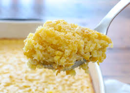

Corn pudding

Description
Corn pudding (also called pudding corn, puddin' corn, hoppy glop, or spoonbread) is a creamy dish prepared from stewed corn, water,
any of various thickening agents, and optional additional flavoring or texturing ingredients.
Ingredients
- 5 large eggs
- ⅓ cup butter, melted and slightly cooled
- ¼ cup white sugar
- ½ cup milk
- ¼ cup cornstarch
- 1 (15.25 ounce) can whole kernel corn, drained
- 2 (14.75 ounce) cans cream-style corn
Steps
- Preheat the oven to 400 degrees F (200 degrees C). Grease a 2-quart casserole dish.
- Whisk eggs lightly in a large bowl. Add milk, melted butter, sugar, and cornstarch; whisk until well combined.
Stir in drained corn and cream-style corn until fully blended. Pour mixture into the prepared casserole dish.
- Bake in the preheated oven until golden brown, about 1 hour.
- Take it out, let it rest and enjoy!